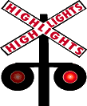
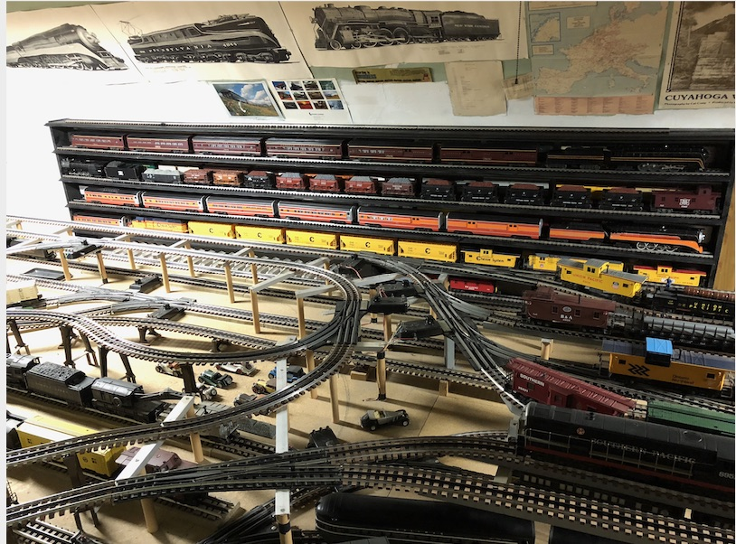
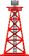
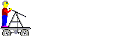

DELLOSSO.ORG
The Dell'Osso Family Web Site and Genealogy
<--------------------------------------- Home |
Bird Dogs (Brittany) |
Hunting Field & Water Trials |
Upland Bird & Waterfowl Hunting |
Deer Hunting (Bow, Shotgun, & Rifle) |
Model Trains |
Other Pleasures --------------------------------------->
[Chrome browser users: for better results, install the Google Translate extension
for other languages]



Model Trains (Scale = 1:48) Real Trains (Scale = 1:1)

Model Trains
Layout capable of running 2 - 3 trains simultaneously on the main tracks (Lower level & Upper level) plus 1 train on the isolated, Elevated level
When running 1, 2, or 3 trains on the main tracks, different switch-track settings allow each train to automatically run ever-changing routes resulting in multiple circumnavigations of the layout before repeating routes
Sophisticated block control (see Wiring Diagram below) prevents collisions of the trains despite running intersecting routes
Trains to be run may be chosen from the many Freight and Passenger Yards on both Lower and Upper levels or from the wall-mounted Display Case
Color-coded Train Layout
Solid Track = Lower Level____Dashed Track = Upper & Elevated Levels____Different Colors = Different Controllers
Lower Level Controllers: A & B. Upper Level Controllers: UH & DH. Elevated Level Controller: EL
Wiring Diagram of Layout
Wiring of blocks, relays, and switches that allows running 2 - 3 trains simultaneously on the intersecting main Lower and Upper level tracks plus 1 train on the isolated, Elevated track
Lower Level to Upper Level Intersection: A => UH @ Switch Track 2
Upper Level to Lower Level Intersection: DH => B @ Switch Track 7
Lower Level Intersections: A => B @ Switch Track 1 & B => A @ Switch Tracks 1', 2', & 4'
Powered by 2 ZW transformers (275w each), 1 Type R transformer (110w), and a relay power supply
Lower Level: Passenger Yards [P1, P1A, & P2 - P3] (A) & Freight Yards [F1 - F4] (B)
Log Loader + Coal Elevator (B3), Milk Platform + Cattle Ramp (SB), & Crossing Gate + Gateman (B4)
Upper Level: Freight Yards [F5, F5A, F6, F7, DH1, & DH2] (DH)
Top of page
Large Layout Views

Display Case with 4 (10' 6") double-tracked shelves and 5 (4' 5") single-tracked shelves providing over 106' of Gargraves track on which trains are stored.
Top of page
Partial Layout Views

Model Train Videos
Driving a Real Train


Top of page
Home |
Bird Dogs (Brittany) |
Hunting Field & Water Trials |
Upland Bird & Waterfowl Hunting |
Deer Hunting (Bow, Shotgun, & Rifle) |
Model Trains |
Other Pleasures